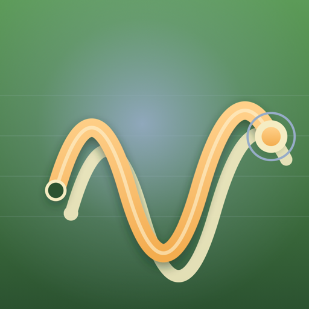
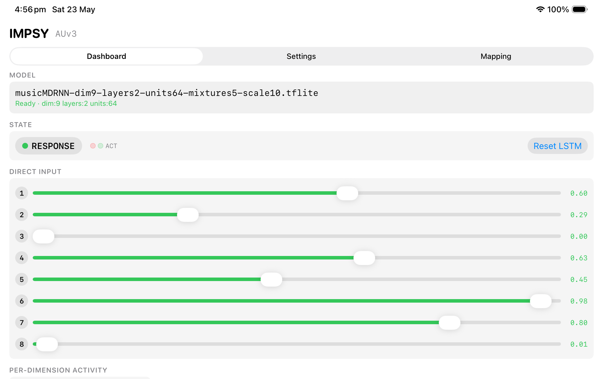
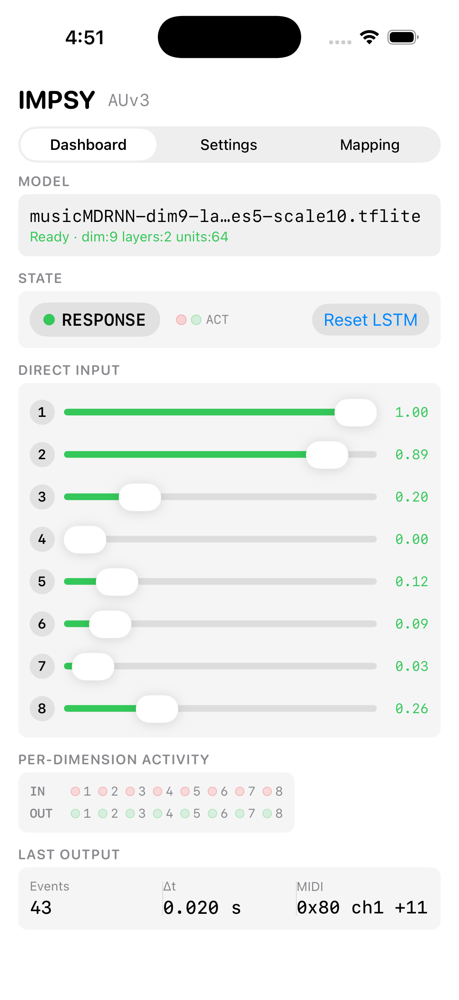
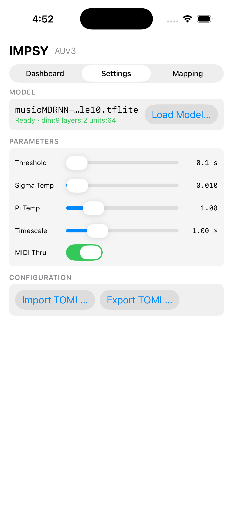
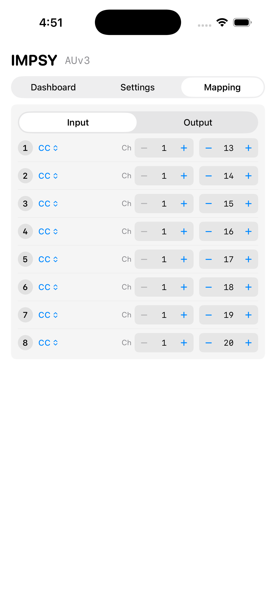
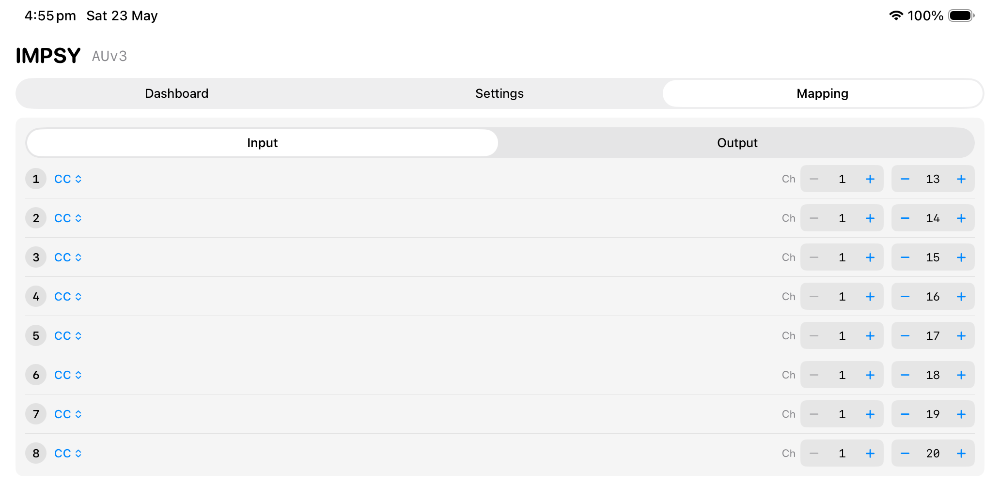
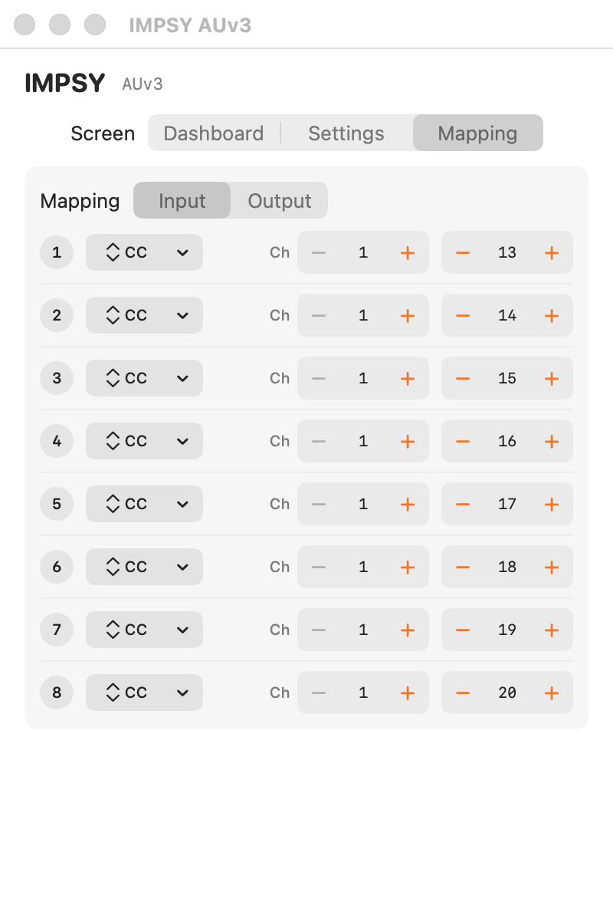
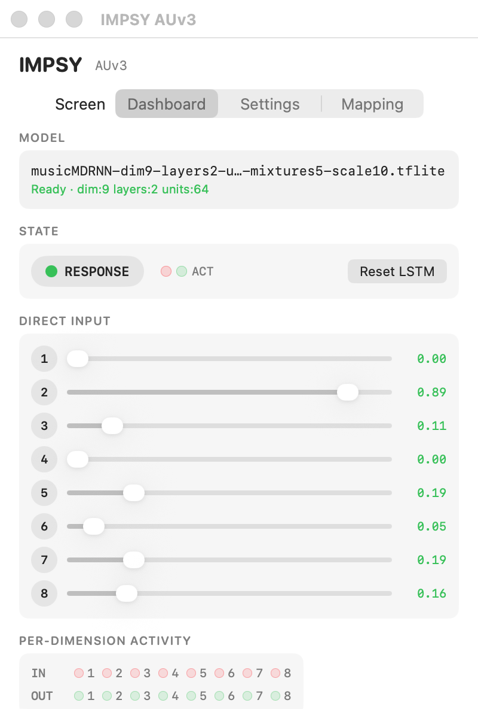

AUv3 MIDI Processor · iOS 17 & macOS 14
IMPSY listens to what you play and improvises musical responses in your DAW. Load it as an AUv3 MIDI Processor in AUM, Logic Pro, Cubasis or MainStage, send MIDI from any keyboard or controller, and route IMPSY's output to any instrument.

What it is
IMPSY runs a Mixture Density Recurrent Neural Network on-device. Every note, control change or pitch-bend you send becomes input to the model, which predicts what should happen next — including the timing of the response.
The plugin works as an AUv3 MIDI Processor: it sits between your controller and your synth, listens to MIDI in, and emits MIDI out. No audio. Nothing leaves your device.

The live dashboard — IMPSY responding on iPad.
How it works
How long IMPSY waits between your input and its reply. Short for fast call-and-response, longer for breathing room.
Randomness of pitch and control values. Lower stays close to what it learned, higher invites surprise.
Randomness of which musical "idea" the model chooses from its mixture. Affects motif selection rather than note jitter.
Speeds up or slows down the response. The same model phrase can come back faster or slower without retraining.
| Parameter | Range | Default | What it does |
|---|---|---|---|
| Threshold | 0.1 – 10.0 s | 0.1 s | Pause between input and reply. |
| Sigma Temp | 0.001 – 2.0 | 0.01 | Randomness of pitch and control values. |
| Pi Temp | 0.1 – 5.0 | 1.0 | Randomness of mixture-component choice. |
| Timescale | 0.1 – 4.0× | 1.0× | Speeds up or slows down the response. |
| MIDI Thru | on / off | on | Pass your own MIDI through to the synth as well as into IMPSY. |
Inside the plugin
Three screens. Designed for the compact AUv3 surface and laid out the same way on iPhone, iPad and Mac.

Dashboard — live state.

Settings — four sliders, MIDI thru, TOML config.

Mapping — assign each dimension to any MIDI message.

Mapping editor on iPad. Each model dimension is freely assignable to a MIDI CC, note or pitch-bend on any channel.

Mapping a 9-dimensional model. macOS plugin view.
Custom models
IMPSY ships with a default 9-dimensional MDRNN model trained for general
musical interaction, but it loads any .tflite model trained with the
open-source
IMPSY research toolkit.
Map each model dimension to any MIDI message — notes, CCs, pitch-bend — and use IMPSY with synths, drum machines, lighting rigs, or anything that speaks MIDI. Mappings save with your session and can be imported and exported as TOML to match the configs used by IMPSY's Python research scripts.
Where it runs
AUM, AudioBus, Cubasis 3.3+, and any AUv3 host that loads MIDI Processor (aumi) plugins. Plays nicely with hardware MIDI controllers over USB or Bluetooth.
Logic Pro and MainStage. Loads in the MIDI FX slot, between your controller and your instrument tracks.
No audio I/O. IMPSY processes MIDI events end-to-end — your DAW's signal chain stays clean.
Research background
IMPSY (Intelligent Musical Prediction SYstem) began as research at the ANU School of Cybernetics into creative music-making with on-device neural networks. The underlying framework — model architecture, training code, and recording tools — is open source.

IMPSY in the macOS container app. Same UI inside any AUv3 host.
Support
Replies usually arrive within a few business days.
When reporting a problem, please include your device, OS version, the AUv3 host you're using (e.g. Logic Pro, AUM), and any custom .tflite model you loaded.
.tflite file from Files (iOS) or Finder (macOS).aumi), so Live won't see it. Confirmed working hosts: Logic Pro, MainStage, AUM, Cubasis 3.3+, AudioBus.aumi hosting to it. Use AUM or Cubasis on iOS for IMPSY instead.